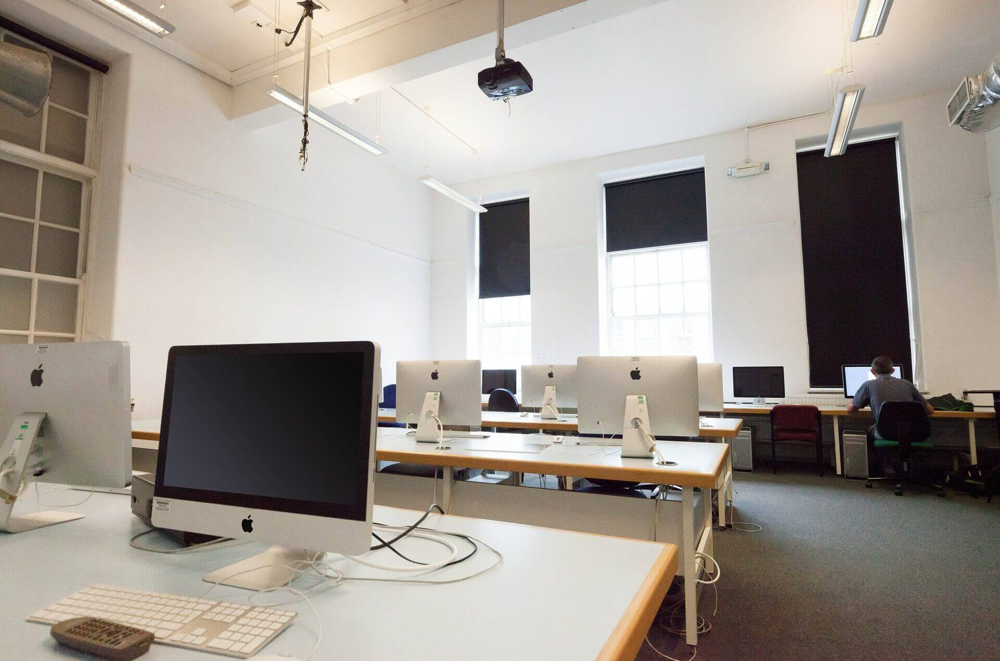
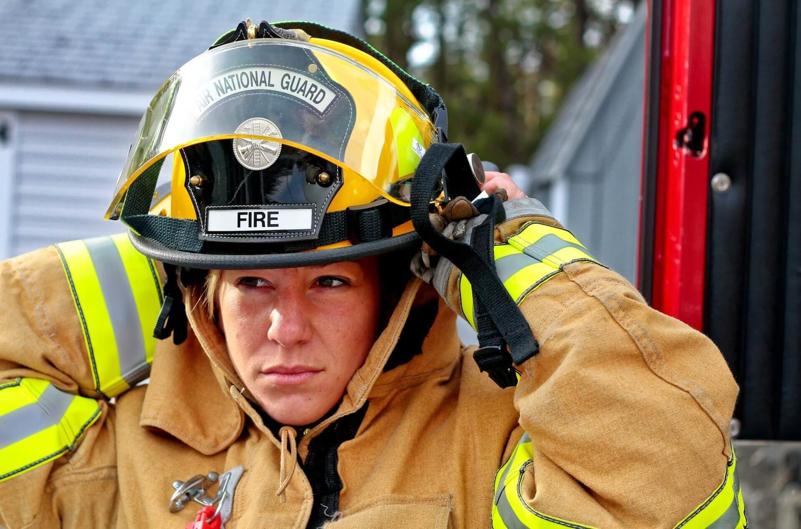

Welcome to Rock Valley College!
RVC offers state of the art courses, with a commitment to landing students actual jobs. At RVC you can expect knowledgable professors that don't waste your time. The cost of learning at RVC is incredibly reasonable and affordable, the staff is passionate and guiding, and the courses are packed with content, all in a friendly community setting.
Everything seen on this page was programmed with the knowledge gained in just half of a semester, in a single course. Imagine what you can grasp with just a few classes at RVC! It doesn't end there though: RVC can help students transfer to a four year college, or find employment through their RVCJobs program. Here you can also earn certificates, or undergo certain specified training for specific careers.
"Before enrolling in RVC, I really saw no possibility of a higher education, I felt like I had missed my chace. All of that changed when I enrolled in RVC's GED program. In just 8 weeks, I gained the knowledge to obtain my GED, and from there I got all the support and empowerment I needed to take the step into college. My family is low-income, yet RVC is giving me a real shot at getting into the career I want. Take it from the student writing this page: So far my first semester has been nothing but learning skills genuinely useful in the long term for my career." - Maxwell Schonberg, RVC student.
Gallery
Hover over an image to view info!
-
Peer Mentoring
Here at RVC, our student metors can help you through your educational journey. They possess real experience, and can act as a friend in times of need.
-
Student Visas
We help international student achieve student visas! Students from over 30 countries attend RVC.
- 
Computer Lab
We house several quality computer labs for student, class, and community use.
- 
Specialized Training
At RVC, you can earn specialized degrees that require hands-on experience and training, like Fire Science.
-
Famous Geese
On campus you can find our famous geese. There's a lot of them. Don't worry though! They don't bother anyone.
-
Community
RVC has a commitment to Rockford and it's people. We offer many services to foster a strong community on our campus.
-
Professors
Our professors work day and night to bring a quality learning experience to our students.
-
Tech Fields
For a new age of workers, RVC offers many courses to prepare students for jobs in tech.
{kind=link}
Peer Mentoring
Here at RVC, our student metors can help you through your educational journey. They possess real experience, and can act as a friend in times of need.
Student Visas
We help international student achieve student visas! Students from over 30 countries attend RVC.
Computer Lab
We house several quality computer labs for student, class, and community use.
Specialized Training
At RVC, you can earn specialized degrees that require hands-on experience and training, like Fire Science.
Famous Geese
On campus you can find our famous geese. There's a lot of them. Don't worry though! They don't bother anyone.
Community
RVC has a commitment to Rockford and it's people. We offer many services to foster a strong community on our campus.
Professors
Our professors work day and night to bring a quality learning experience to our students.
Tech Fields
For a new age of workers, RVC offers many courses to prepare students for jobs in tech.
RVC GED Program
Many adults who have dropped out of school will give up on their edicational dreams. However, at RVC, it's never too late to start learning again. For absolutely no up-front cost, RVC will help you obtain your GED in as little as 8 weeks. You can impact the rest of your entire life, with zero cost, and some commitment.
RVC can provide you with a state of the art online learning platform, I-pathways. I-pathways features all of the learning content you need to pass the GED exams, and helps track your progress. It features quizzes to measure your knowledge: Those who already understand the material aren't required to read it all.
RVC supplies learners with vouchers for tests, meaning they don't need to purchase the tests on their own. For the good of the entire community, RVC is helping people who wouldn't normally be capable of seizing their future.
Services
RVC wants to bring the best possible experience for students, this means providing high quality assistance, and making a commitment to student safety and mental health. RVC is a non-profit, with a goal centered on community growth. Below is info on some of our services, availible to all students. This is only a small sample of everything RVC has to offer. For a full list, please visit the official RVC website.
| Service | Availibility | Description |
|---|---|---|
| RVC Bookstore | Mon-Thu: 8:30pm-6pm Fri: 8:30am-3pm |
Helps students rent and purchase the class materials they need. Features online options, as well as official RVC merchandise. |
| Computer Labs | Mon-Thu: 10:00am-9:30pm Fri: 10:00am-4:00pm |
Multiple labs with computers. Free for student use, features a lab assistant to help with issues. Internet and printer access. |
| Disability Support Services | N/A, Coordinator: Mon-Fri: 8am-5pm | A broad range of accomadations ready to be made for disabled students. Communication services, assistive technology, and our RAISE program. |
| RVC EAGLE | 24/7 | An online learning platform that lets students turn in assignments, view grades, consume material, and conduct discussions. |
| Library | Mon-Fri: 8am-5pm | A collection of over 90,000 volumes, 650 periodical titles, and much more. Features coffee shop, study spaces, and information specialists. |
| Math Lab | Various times for each tutor | A center for tutors to assist all students with math work. |
| Online Services | 24/7 | Online student services for students to access grades, financial info, and generally provide a long list of tools to streamline and centralize student info and matters. |
| Personal and Success Counseling | Appointments, Mon-Fri: 8:30am-4:30pm | Counseling to help students live, learn, and cope. Helps students with identity, mental health, and goals. |
| Service | Availibility | Description |
|---|---|---|
| RVC Bookstore | Mon-Thu: 8:30pm-6pm Fri: 8:30am-3pm |
Helps students rent and purchase the class materials they need. Features online options, as well as official RVC merchandise. |
| Computer Labs | Mon-Thu: 10:00am-9:30pm Fri: 10:00am-4:00pm |
Multiple labs with computers. Free for student use, features a lab assistant to help with issues. Internet and printer access. |
| Disability Support Services | N/A, Coordinator: Mon-Fri: 8am-5pm | A broad range of accomadations ready to be made for disabled students. Communication services, assistive technology, and our RAISE program. |
| RVC EAGLE | 24/7 | An online learning platform that lets students turn in assignments, view grades, consume material, and conduct discussions. |
| Library | Mon-Fri: 8am-5pm | A collection of over 90,000 volumes, 650 periodical titles, and much more. Features coffee shop, study spaces, and information specialists. |
| Math Lab | Various times for each tutor | A center for tutors to assist all students with math work. |
| Online Services | 24/7 | Online student services for students to access grades, financial info, and generally provide a long list of tools to streamline and centralize student info and matters. |
| Personal and Success Counseling | Appointments, Mon-Fri: 8:30am-4:30pm | Counseling to help students live, learn, and cope. Helps students with identity, mental health, and goals. |
RVC offers these services, not just to entice customers, but to help raise up Rockford into something better, something stronger. That's why we offer many of these services to everyday people, not just students. That's the community, in our community college.
Some services may be restricted or requiring appointments due to Covid-19. RVC is putting student and faculty safety first, and takes measures to provide a sanitary and safe environment for all students. Please check our official website's Covid-19 page for any additional info about Covid-19 measures.
We hope to see you next semester! Sign ups can be done at our official website, or on campus at 3301 N Mulford Rd. You can also reach us at 815-921-7821815-921-7821.